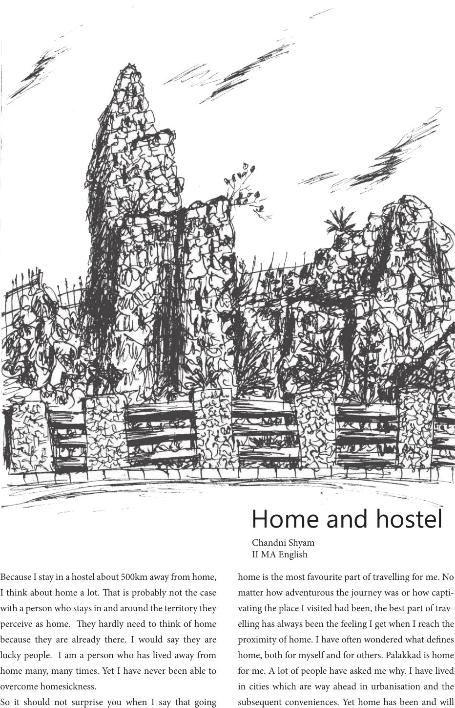

Because I stay in a hostel about 500km away from home,
I think about home a lot. at is probably not the case
with a person who stays in and around the territory they
perceive as home. ey hardly need to think of home
because they are already there. I would say they are
lucky people. I am a person who has lived away from
home many, many times. Yet I have never been able to
overcome homesickness.
So it should not surprise you when I say that going
home is the most favourite part of travelling for me. No
matter how adventurous the journey was or how capti-
vating the place I visited had been, the best part of trav-
elling has always been the feeling I get when I reach the
proximity of home. I have oen wondered what denes
home, both for myself and for others. Palakkad is home
for me. A lot of people have asked me why. I have lived
in cities which are way ahead in urbanisation and the
subsequent conveniences. Yet home has been and will
Home and hostel
Chandni Shyam
II MA English